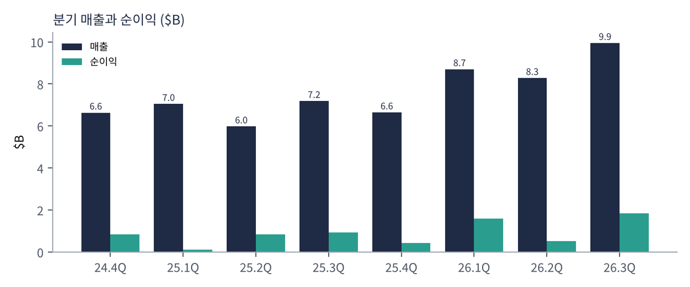
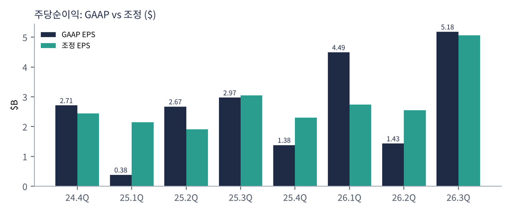
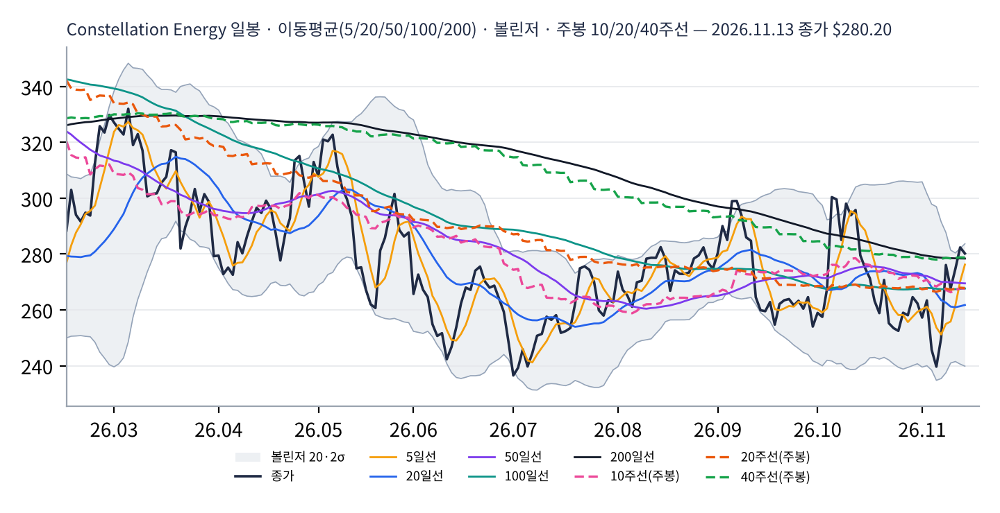
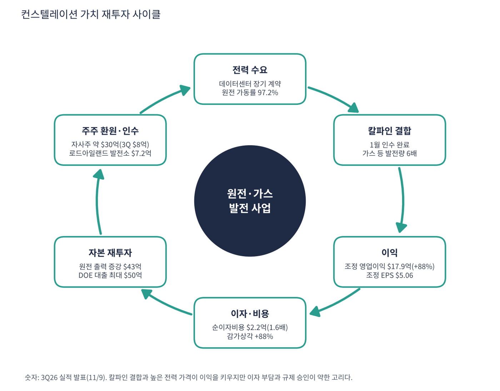

컨스텔레이션 에너지는 2022년 엑셀론에서 분리된 미국 최대 규모의 청정 전력 발전사다. 원전을 중심으로 수력·풍력·태양광을 운영하고, 올해 1월 칼파인(가스 발전) 인수를 마치면서 가스·재생 설비가 크게 늘었다. 데이터센터 등 전력 수요 급증과 PJM 지역 전력 가격 상승을 칼파인 결합으로 키워 이익이 두 배 가까이 늘었지만, 차입금이 $234억으로 늘었고 인수 이후 EPS 성장이 인수 효과인 회사다.
| 항목 | 내용 |
|---|---|
| 종목 | Constellation Energy Corporation (CEG) · NASDAQ · 전력 발전 · 본사 미국 메릴랜드주 볼티모어 |
| 밸류에이션 | PER 22.5배(GAAP TTM), 조정 22.2배 · P/S 2.98배 (11/13 종가 $280.20) |
| 최근 분기(3Q26) | 영업수익 $95.5억(+45%, 스캐너 $99.5억), 순이익 $18.4억, GAAP EPS $5.19, 조정 영업 EPS $5.06(전년 $3.04) |
| 영업이익 | $24.9억(+130%, 전년 $10.9억). 감가상각 $4.5억(+88%), 순이자비용 $2.2억(전년 $1.3억) |
| 발전량 | 가스·석유·재생 발전량 44,982GWh(전년 6,174GWh), 이 중 옛 칼파인 설비 38,387GWh. 원전 가동률 97.2% |
| 현금·부채 | 현금 등 약 $10억, 총차입금 약 $234억, TTM EBITDA 약 $85억, TTM 잉여현금 약 $13억(스캐너) |
| 가이던스(2026) | 조정 영업 EPS $12.50~12.80(기존 $11.50~12.50, 올해 두 번째 상향). 2027·2028 가이던스는 연말 실적 때 발표 |
| 다음 실적 | 4Q26 실적: 2027년 2월 25일 예정(트레이딩뷰) |
| 직책 | 인물 | 역할·특징 |
|---|---|---|
| CEO | 조 도밍게스 | 원전과 데이터센터 장기 계약을 이끈다(3Q 자료에서 발언 확인은 못 함) |
| CFO | 셰인 스미스 | 올해 두 번째 가이던스 상향의 이유로 원전 출력 증강, 로드아일랜드 인수, 자사주 매입을 자본 배분 우선순위로 꼽았다 |
경영 스타일: '원전 가치를 높이고, 인수와 자사주로 자본을 돌린다'. 3Q에는 로드아일랜드 주 에너지 센터(셸 보유)를 $7.15억에 인수하기로 했고, 원전 출력 증강을 위한 미국 에너지부 조건부 대출 약정(최대 $50억)을 받았다. 올해 자사주 약 $30억을 샀고 3Q에만 $8억이다.
원전 가동률 97.2%(살렘·STP 제외)를 유지하며 출력 증강으로 발전 용량을 늘린다. 데이터센터용 장기 계약과 'Peak+' 상품으로 신뢰성 가치를 가격에 반영하려 한다.
AI·클라우드 데이터센터가 요구하는 무탄소 안정 전력을 원전과 가스로 공급한다. 회사는 2030년까지 성장 전망을 연말에 갱신한다고 밝혔다.
다음 실적발표는 세 가지 질문에 답하는 자리다.
1. 이자·비용이 이번 분기에 개선되나?
2. 악재 '차입·이자' 부담이 줄어드나?
3. PEG 판정이 바뀌나?
한 줄 판정 규칙: 첫 질문의 이자·비용이 좋아지면 약한 고리가 풀리고, 그렇지 않으면 현재 사이클의 약점이 그대로 남는다.
일정: 다음 발표일은 확인 필요(이번 분기 발표 후 일정 미확정). 위 현재값은 이 보고서의 기존 숫자다.
| 분기 | 매출 | 순이익 | EPS | 조정 EPS | 특이 사항 |
|---|---|---|---|---|---|
| 2024.4Q | $66.3억 | $8.5억 | 2.71 | 2.44 | |
| 2025.1Q | $70.5억 | $1.2억 | 0.38 | 2.14 | |
| 2025.2Q | $59.8억 | $8.4억 | 2.67 | 1.91 | |
| 2025.3Q | $71.9억 | $9.3억 | 2.97 | 3.04 | |
| 2025.4Q | $66.4억 | $4.3억 | 1.38 | 2.30 | |
| 2026.1Q | $87.0억 | $15.9억 | 4.49 | 2.74 | 칼파인 인수 완료(1월) |
| 2026.2Q | $82.8억 | $5.1억 | 1.43 | 2.55 | |
| 2026.3Q | $99.5억 | $18.4억 | 5.18 | 5.06 | 조정 영업이익 $17.9억(+88%) |


흐름 요약: 분기 매출은 $60~99억으로 칼파인 편입 후 2026년 들어 크게 늘었다. GAAP EPS는 헤지 평가손익으로 분기마다 흔들리며($0.38~$5.18), 조정 영업 EPS는 $1.91~$5.06이다. 3Q26의 GAAP과 조정의 차이는 미실현 헤지 이익과 세금 조정이 주요 요인이고 칼파인 합병·통합 비용이 일부 상쇄했다. 스캐너의 3Q26 매출($99.5억)은 회사 발표 영업수익($95.5억)과 달라 표에는 스캐너 값을 일관되게 썼다. 영업이익과 분기 설비투자는 이 자료에서 구하지 못해 표에서 뺐다.
| 구분 | 3Q26 숫자 | 비고 |
|---|---|---|
| 원전 | 가동률 97.2% | 살렘·STP 제외. 계획 정비 20일(전년 23일) |
| 가스·석유·재생 | 44,982GWh(전년 6,174GWh) | 옛 칼파인 설비가 38,387GWh |
| 재생(풍력·태양광·수력) | 에너지 포착률 96.4% | 전년 96.8% |
원전이 이익의 중심이고, 칼파인이 규모를 키웠다. 발전량이 7배로 늘었지만 단가가 높은 원전의 가치는 데이터센터 계약과 PJM 가격으로 평가된다. 원전 생산세액공제 이익은 줄었다.
컨스텔레이션의 방향은 '원전 가치를 극대화하고 전력 수요 증가분을 장기 계약으로 잡는 것'이다.
| 축 | 최근 움직임 |
|---|---|
| 원전 출력 증강 | 약 $43억 규모 증강 투자, 미국 에너지부 조건부 대출 최대 $50억 |
| 인수 | 칼파인(1월 완료), 로드아일랜드 발전소 $7.15억(규제 승인 대기) |
| 자사주 | 올해 약 $30억, 3Q $8억 |
| 성장 전망 | 2027·2028 가이던스와 2030년 전망은 연말 발표 |

| 이동평균 | 값 | 종가 대비 | 해석 |
|---|---|---|---|
| 5일선 | $276.24 | +1.4% | 실적 후 반등 |
| 20일선 | $261.75 | +7.0% | 10월 급락 후 하향 |
| 50일선 | $269.51 | +4.0% | 횡보 |
| 100일선 | $267.66 | +4.7% | 횡보 |
| 200일선 | $278.40 | +0.6% | 현재가가 바로 위 |
주봉 흐름: 2025년 12월 고점 $381 → 2026년 2월 $243 → 3~5월 $270~330 박스 → 7월 저점 $228.6 → 10/5 주 $309.8 반등 → 11/2 주 저가 $231 → 실적 발표 주(11/9) +12%로 $280.
| 규칙 | 기준 | 현재 값 | 신호 |
|---|---|---|---|
| 장기 추세 필터 | 종가 vs 200일선 | $280.20 > $278.40 | 매수 |
| 중장기 교차 | 50일선 vs 200일선 | $269.51 < $278.40 | 매도 |
| 단기 교차 | 20일선 vs 50일선 | $261.75 < $269.51 | 매도 |
| 돈키언 채널 | 55일 고가 $309.80 / 저가 $231.30 | 중간값 $270.55 위 | 매수 |
| 1개월 모멘텀 | 21거래일 수익률 | +1.9% (기준 $275.00) | 매수 |
| 3개월 모멘텀 | 63거래일 수익률 | +0.7% (기준 $278.20) | 매수 |
| 6개월 모멘텀 | 126거래일 수익률 | +4.9% (기준 $267.20) | 매수 |
| 12개월 모멘텀 | 252거래일 수익률 | -20.9% (기준 $354.02) | 매도 |
| 종합 (8개 평균) | +0.25 | 매수 우위 |
해석: 8개 중 5개 매수, 3개 매도. 현재가가 200일선($278.4)을 막 넘었다. 14일 ATR $13.60 (4.9%).
| 가격 | 무엇이 바뀌나 | 의미 |
|---|---|---|
| $278 이탈 | 200일선 | 장기 추세 필터 매수 → 매도 |
| $270.6 이탈 | 돈키언 중간값 | 55일 채널 매도 |
| $269.5 상향 돌파 | 50일선 | 20/50 교차 개선 조건 |
| 구분 | 가격대 | 근거 |
|---|---|---|
| 저항 1 | $298 ~ 310 | 10월 초 반등 고점, 55일 고점 $309.8 |
| 지지 1 | $262 ~ 270 | 20일선·50일선 |
| 지지 2 | $231 | 55일 저점 |
실적 후 200일선 위로 올라온 상태다. $262~278에서 계획 비중의 30%만 진입하고 종가 $243(ATR 약 2배 아래) 이탈 시 손절한다. 1차 목표 $310(55일 고점), 2차 $330(내 가정). 조건은 연말 2027 가이던스 확인이다.
| 악재 요인 | 내용 | 강도 |
|---|---|---|
| 차입·이자 | 총차입금 $234억, 현금 $10억, 이자 증가 | 중간~높음 |
| 인수 효과 소멸 | EPS 성장의 상당 부분이 칼파인 편입 | 중간 |
| 규제·정책 | PJM 가격 규제, 원전 생산세액공제 감소 | 중간 |
| 헤지 평가손익 | GAAP EPS 변동 | 참고 |
| 티커 | 회사 | PER(TTM) | PEG | P/S | EPS 성장(YoY) |
|---|---|---|---|---|---|
| CEG | 컨스텔레이션 | 22.2배 | 0.68 | 2.98배 | +33% |
| VST | 비스트라 | 18.0배 | – | 2.21배 | +165% |
| NRG | NRG 에너지 | 17.1배 | – | 0.59배 | -17% |
| TLN | 탈렌 에너지 | 적자 | – | 3.80배 | -225% |
CEG의 PER·PEG·성장률은 조정 EPS 기준이고 나머지는 트레이딩뷰 GAAP TTM이다.
비교 결론: 조정 PER 22배는 비스트라(18배)보다 높고 NRG(17배)보다도 높다. 원전 프리미엄이 반영돼 있다.
CEG는 차입 부담이 큰 인프라형 회사다. 현금 등이 약 $10억에 불과하고 총차입금이 약 $234억이다. 칼파인 인수 후 재차입이 늘면서 이자비용이 올랐다.
| 지표 | 값 | 계산·출처 | 해석 |
|---|---|---|---|
| 현금 등 | 약 $10억 | 스캐너 | 유동성은 신용 한도 등을 확인해야 함(미확인) |
| 총차입금 | 약 $234억 | 스캐너 | 순부채 약 $224억 |
| TTM EBITDA | 약 $85억 | 스캐너 | 순부채/EBITDA 약 2.6배 |
| TTM 잉여현금흐름 | 약 $13억 | 스캐너 | – |
| 순이자비용(3Q) | $2.2억 | 회사 발표 | 전년 $1.3억 |
| 기준 | 값 | 비고 |
|---|---|---|
| P/S (TTM) | 2.98배 | TTM 매출 약 $336억(내 계산) |
| P/FCF | 약 76배 | 잉여현금 $13억 (투자 지출이 커서 의미 낮음) |
| 동종 | 비스트라 2.2, NRG 0.6, 탈렌 3.8 | 11/13 스캐너 |
해석: 잉여현금은 적고 EBITDA 기준이 더 적절하다. 스트레스 가정(EBITDA $85억·순부채 $224억 고정, 내 가정): EV/EBITDA 10배면 주가 약 $177(-37%), 12배면 $225(-20%), 16배면 $321(+15%)이다.
| 지표 | 값 | 판정 |
|---|---|---|
| PER (GAAP TTM) | 22.5배 | TTM EPS $12.48 |
| PER (조정 TTM) | 22.2배 | 최근 4분기 조정 EPS 합 $12.65 (내 계산) |
| PER (2026 가이던스 중간값 기준) | 22.2배 | $280.20 ÷ $12.65 |
| EV / EBITDA | 약 14.3배 | EV(차입금 $234억 − 현금 $10억 반영),217억, ÷ $85억 |
| 방식 | PER | EPS 성장률 | PEG | 판정 |
|---|---|---|---|---|
| 트레이딩뷰 (GAAP TTM) | 22.5배 | +42.9% | 약 0.52 | 투자 적격 헤지 평가이익 포함 |
| 조정 EPS 기준 (TTM) | 22.2배 | +32.7% | 0.68 | 투자 적격 |
| 조정 TTM $12.65 ÷ 직전 TTM $9.53 | – | – | – | 직전: 4Q24 2.44 + 1Q25 2.14 + 2Q25 1.91 + 3Q25 3.04 |
| 2026 가이던스 중간값 $12.65 ÷ 2025 조정 EPS $9.39 | 22.2배 | +34.7% | 약 0.64 | 투자 적격 내 계산 |
판정: 조정 PEG 0.68로 투자 적격이다. 다만 성장의 상당 부분은 칼파인 편입(인수)이 만든 일회성 성격이라 이후 같은 속도로 이어지기는 어렵다. 2027·2028 가이던스(연말 발표)가 성장 지속성을 확인하는 지점이다. 일회성 이익(헤지 평가이익)이 반영된 GAAP PEG는 0.52다.

컨스텔레이션의 사이클은 전력 수요·가격 → 이익 → 증강·인수 투자 → 자사주·환원이다. 이자 부담과 규제 승인이 약한 고리다.
| 고리 | 현재 숫자 | 고리 강도 | 약해지는 신호 |
|---|---|---|---|
| ① 전력 수요 | 원전 가동률 97.2%, 데이터센터 계약 | 강함 | 데이터센터 투자 둔화, 규제 변경 |
| ② 규모 | 칼파인 편입, 발전량 7배 | 강함 | 통합 비용 |
| ③ 이익 | 조정 영업이익 $17.9억(+88%) | 강함 | 헤지 평가이익 반복 불가 |
| ④ 이자·비용 | 순이자 $2.2억, 감가상각 +88% | 부담 | 금리, 재차입 |
| ⑤ 재투자 | 출력 증강 $43억, 로드아일랜드 인수 | 진행 | 규제 승인 지연 |
| ⑥ 환원 | 자사주 올해 약 $30억 | 진행 | 현금 부족($10억) |
구조: 강한 고리는 ①②③, 약한 고리는 ④⑤⑥이다.